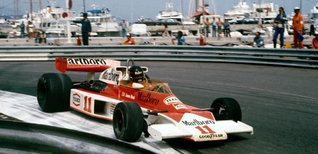

1950s - O Nascimento da Fórmula 1
1950: A Fórmula 1 foi estabelecida pela FIA, com a primeira corrida do campeonato mundial sendo realizada em Silverstone, no Reino Unido. A vitória foi de Giuseppe Farina, da Alfa Romeo, que também se tornaria o primeiro campeão mundial da F1.
Primeiros Campeonatos: Nos primeiros anos, a Alfa Romeo dominou com seus carros 158 e 159, pilotados por lendas como Farina e Juan Manuel Fangio.
Ferrari e Maserati: Após o domínio inicial da Alfa Romeo, a Ferrari, sob a liderança de Enzo Ferrari, emergiu como uma força dominante. A Ferrari ganhou seu primeiro campeonato de pilotos com Alberto Ascari em 1952 e 1953.
Maserati: A Maserati também se destacou, especialmente com Juan Manuel Fangio, que levou a equipe ao sucesso em 1957.
Motores e Chassis: Os carros da década de 1950 eram simples, com motores de 4.5 litros naturalmente aspirados ou 1.5 litros sobrealimentados. O motor era colocado na frente, uma configuração que limitava a aerodinâmica e a manobrabilidade.
Aprimoramentos: Mesmo com a simplicidade dos carros, houve inovações como a introdução dos primeiros monocoques de alumínio.
Baixa Segurança: A segurança era praticamente inexistente, com carros frágeis e circuitos sem barreiras de proteção adequadas. Isso levou a vários acidentes fatais, destacando a necessidade de melhorias na segurança.
Acidentes Trágicos: A década foi marcada por tragédias como a morte de Alberto Ascari em 1955 e a catástrofe nas 24 Horas de Le Mans no mesmo ano, onde mais de 80 espectadores morreram.
1960s - Revolução Tecnológica e Crescimento Global
Motor Traseiro: A Cooper revolucionou a F1 ao introduzir carros com motores traseiros, uma inovação que mudou para sempre o design dos carros de corrida.
Lotus e Colin Chapman: Lotus, liderada pelo visionário Colin Chapman, trouxe inovações como o uso extensivo de aerodinâmica e suspensão independente. O Lotus 25, com seu monocoque, redefiniu o design dos carros.
Ícones da Década: Jim Clark, da Lotus, se destacou como um dos maiores talentos, conquistando dois campeonatos mundiais (1963, 1965). Outros pilotos notáveis incluíam Graham Hill, Jack Brabham, e John Surtees.
Competitividade: A rivalidade entre Jim Clark e Graham Hill marcou a década, oferecendo corridas emocionantes e disputas acirradas.
Motores Potentes: A introdução de motores V8 e V12 proporcionou mais potência, enquanto avanços na suspensão e nos freios melhoraram o desempenho e a segurança dos carros.
Primeiros Spoilers: Nos anos 60, começaram a surgir os primeiros spoilers e asas nos carros, que ajudavam a aumentar a pressão aerodinâmica e melhorar a aderência nas curvas.
Acidentes e Reações: Tragédias como a morte de Jim Clark em 1968 levaram a um aumento na conscientização sobre a segurança.
Regulamentações: As primeiras regulamentações de segurança começaram a ser introduzidas, incluindo capacetes obrigatórios e melhorias nos circuitos.
1970s - Era de Inovações e Maior Ênfase na Segurança
Efeito Solo: A Lotus introduziu o conceito de efeito solo em 1977 com o modelo 78, usando saias laterais para selar o fluxo de ar e criar uma pressão negativa que mantinha o carro colado ao chão.
Turbo e Potência: A Renault introduziu o motor turbo em 1977, revolucionando o esporte e abrindo caminho para a era dos motores turbo que dominariam nos anos seguintes.
Ferrari e Niki Lauda: A Ferrari, com Niki Lauda, foi uma das equipes dominantes, conquistando campeonatos em 1975 e 1977.
Lotus e McLaren: A Lotus, sob a liderança de Colin Chapman, continuou a inovar, enquanto a McLaren emergiu como uma potência com pilotos como Emerson Fittipaldi e James Hunt.
Acidentes Fatais: A morte de pilotos como Jochen Rindt e François Cevert destacou a necessidade de melhorias contínuas na segurança.
Inovações em Segurança: Introdução de carros com estruturas de sobrevivência mais fortes, melhorias na segurança dos circuitos e a criação da Associação de Pilotos de Grand Prix (GPDA) para defender melhores condições de segurança.
Patrocínios: A entrada de grandes patrocinadores trouxe mais dinheiro e profissionalismo ao esporte. A década de 1970 viu a F1 se tornar um grande negócio, com equipes investindo pesadamente em tecnologia e marketing.
Televisão e Popularidade: A cobertura televisiva aumentou a visibilidade do esporte, levando a um crescimento global da base de fãs.
1980s - A Era dos Motores Turbo e Rivalidades Icônicas
Potência Extrema: Os motores turbo, introduzidos pela Renault, se tornaram a norma. Com potências que ultrapassavam os 1000 cavalos, os carros se tornaram incrivelmente rápidos.
Desafios Técnicos: A confiabilidade era um grande problema, e as equipes lutavam para gerenciar o calor e a durabilidade dos motores turbo.
McLaren e Williams: McLaren, com Alain Prost e Ayrton Senna, e Williams, com pilotos como Nelson Piquet e Nigel Mansell, dominaram a década.
Rivalidades Lendárias: A rivalidade entre Senna e Prost é uma das mais icônicas da história do esporte, marcada por corridas disputadas e colisões controversas.
Segurança em Foco: Com os carros ficando cada vez mais rápidos e perigosos, a FIA introduziu regulamentações mais rigorosas de segurança, como melhorias na proteção dos cockpits e restrições aerodinâmicas.
Mudanças de Regulamento: As regras foram ajustadas várias vezes para tentar limitar a potência dos motores turbo e melhorar a segurança dos pilotos.
Novos Mercados: A F1 começou a expandir para novos mercados, com corridas sendo realizadas em locais como o Japão e a Austrália, aumentando a popularidade global do esporte.
Cobertura Midiática: A cobertura televisiva se expandiu, com mais transmissões ao vivo e uma maior cobertura das corridas, que ajudaram a popularizar a F1 em todo o mundo.
1990s - A Ascensão de Schumacher e a Era das Equipes Britânicas
Williams e McLaren: Williams dominou a primeira metade da década com inovações como a suspensão ativa, enquanto a McLaren continuou a ser uma força dominante com Ayrton Senna e depois Mika Häkkinen.
Inovações Tecnológicas: A Williams, sob a liderança de Adrian Newey, foi pioneira em várias tecnologias, incluindo aerodinâmica avançada e eletrônica de controle.
Benetton e Ferrari: Michael Schumacher emergiu como o piloto dominante, conquistando campeonatos com a Benetton em 1994 e 1995 antes de se transferir para a Ferrari, onde iniciaria uma era de domínio na próxima década.
Desafios e Rivalidades: Schumacher enfrentou rivais como Damon Hill e Jacques Villeneuve, proporcionando algumas das disputas mais emocionantes da década.
Eletrônica e Aerodinâmica: A década de 1990 viu uma ênfase crescente na eletrônica, com a introdução de sistemas de telemetria avançada e a utilização de túneis de vento para aprimorar a aerodinâmica dos carros.
Motores V10 e V12: Os motores V10 e V12 se tornaram a norma, oferecendo um equilíbrio entre potência e durabilidade.
Mortes Trágicas: A morte de Ayrton Senna em 1994 foi um ponto de inflexão, levando a mudanças significativas nas regulamentações de segurança.
Melhorias em Segurança: A FIA introduziu melhorias como cockpits mais robustos, maiores áreas de escape nos circuitos e regulamentações rigorosas para o design dos carros.
Novos Circuitos: A F1 continuou a expandir para novos mercados, com novos circuitos sendo adicionados ao calendário, incluindo locais na Malásia e China.
Aumento da Popularidade: A cobertura televisiva continuou a crescer, e a F1 se consolidou como um dos esportes mais populares do mundo, com uma base de fãs global cada vez maior.
2000s - Domínio da Ferrari e Inovações Tecnológicas
Domínio Absoluto: Michael Schumacher e a Ferrari dominaram a primeira metade da década, conquistando cinco campeonatos consecutivos de pilotos e construtores entre 2000 e 2004.
Inovações da Ferrari: A Ferrari, com o engenheiro Rory Byrne e o chefe de equipe Jean Todt, introduziu inovações como motores V10 altamente confiáveis e estratégias de pit stop inovadoras.
Proibição de Reabastecimento: A FIA introduziu várias mudanças nas regras, incluindo a proibição de reabastecimento durante as corridas, para aumentar a segurança e a competitividade.
Limitações de Testes: Limitações rigorosas em testes durante a temporada foram introduzidas para reduzir os custos e nivelar o campo competitivo.
Fernando Alonso e Renault: Fernando Alonso, da Renault, quebrou o domínio de Schumacher, conquistando campeonatos em 2005 e 2006.
Rivalidades Renovadas: A rivalidade entre Alonso e Schumacher, e posteriormente entre Alonso e Kimi Räikkönen, trouxe novas emoções ao esporte.
KERS e ERS: A introdução de sistemas de recuperação de energia, como o KERS (Kinetic Energy Recovery System), permitiu o armazenamento de energia durante as frenagens para uso posterior.
Aerodinâmica e Eletrônica: A década viu avanços contínuos em aerodinâmica e eletrônica, com as equipes investindo em simuladores avançados e análise de dados para otimizar o desempenho dos carros.
Iniciativas de Segurança: A FIA continuou a melhorar a segurança com a introdução de dispositivos de proteção como o HANS (Head and Neck Support) e o reforço dos cockpits.
Foco em Sustentabilidade: Iniciativas para tornar o esporte mais sustentável começaram a ganhar força, com o objetivo de reduzir a pegada de carbono da F1.
2010s - A Era Híbrida e o Domínio da Mercedes

Introdução de Motores Híbridos: Em 2014, a Fórmula 1 introduziu motores híbridos, combinando motores de combustão interna com sistemas de recuperação de energia, marcando uma nova era de eficiência energética.
Complexidade Técnica: Os novos motores híbridos eram extremamente complexos, com sistemas avançados de recuperação de energia e turbocompressores sofisticados.
Supremacia da Mercedes: A Mercedes, com Lewis Hamilton e Nico Rosberg, dominou a era híbrida, conquistando múltiplos campeonatos de construtores e pilotos.
Rivalidade Interna: A rivalidade entre Hamilton e Rosberg foi intensa, culminando na vitória de Rosberg em 2016, antes de sua surpreendente aposentadoria.
Regulamentações Aerodinâmicas: A FIA introduziu novas regulamentações para reduzir a pressão aerodinâmica e melhorar a competitividade, incluindo restrições nos designs das asas e difusores.
Teto Orçamentário: A introdução de tetos orçamentários visava limitar os gastos das equipes e criar um campo de competição mais nivelado.
Halo e Segurança dos Pilotos: A introdução do Halo em 2018, uma estrutura de proteção para a cabeça dos pilotos, foi uma das maiores inovações em segurança, projetada para proteger os pilotos em caso de capotamentos ou colisões com detritos.
Tecnologia de Ponta: A década viu a introdução de tecnologias avançadas como o uso de fibra de carbono em carros e a integração de sensores para monitorar a saúde e o desempenho dos pilotos em tempo real.
Novos Mercados: A Fórmula 1 continuou a expandir, adicionando corridas em novos locais como Azerbaijão e Vietnã, refletindo a crescente popularidade global do esporte.
Iniciativas Verdes: A F1 se comprometeu com metas ambiciosas de sustentabilidade, incluindo o uso de biocombustíveis e a introdução de motores mais eficientes.
2020s - Novas Regras, Competitividade e Sustentabilidade
Revolução no Design: Em 2022, a F1 introduziu uma revisão radical nos regulamentos técnicos, com foco em carros com efeito solo para aumentar as ultrapassagens e melhorar a competitividade.
Teto Orçamentário: A implementação de um teto orçamentário ajudou a equilibrar a competição, limitando os gastos das equipes e promovendo uma disputa mais justa.
Disputas Intensas: A década começou com uma intensa batalha pelo título entre Max Verstappen, da Red Bull, e Lewis Hamilton, da Mercedes, que culminou em finais de temporada emocionantes.
Diversidade Competitiva: O novo regulamento permitiu que mais equipes competissem na frente do grid, tornando o campeonato mais imprevisível e emocionante.
Biocombustíveis e Neutralidade de Carbono: A F1 continuou a se concentrar em tecnologias sustentáveis, com a introdução de biocombustíveis e um compromisso com a neutralidade de carbono até 2030.
Avanços Tecnológicos: A introdução de tecnologias avançadas, como a análise de dados em tempo real e o uso de simuladores sofisticados, continua a moldar o futuro do esporte.
Expansão para Novos Mercados: A F1 continuou a expandir para novos mercados, com novos circuitos na Arábia Saudita e Miami, refletindo a crescente popularidade global do esporte.
Crescimento de Audiência: A cobertura televisiva e o envolvimento nas mídias sociais ajudaram a aumentar a audiência e a popularidade da F1, tornando-a um dos esportes mais seguidos no mundo.
Sustentabilidade e Tecnologia: A F1 enfrenta o desafio de se manter competitiva e emocionante enquanto adota práticas mais sustentáveis e continua a avançar tecnologicamente.
Futuro: Com as mudanças regulatórias e a rápida evolução da tecnologia, o futuro da Fórmula 1 promete ser tão emocionante quanto seu passado, com novos pilotos e equipes prontos para deixar sua marca na história do esporte.